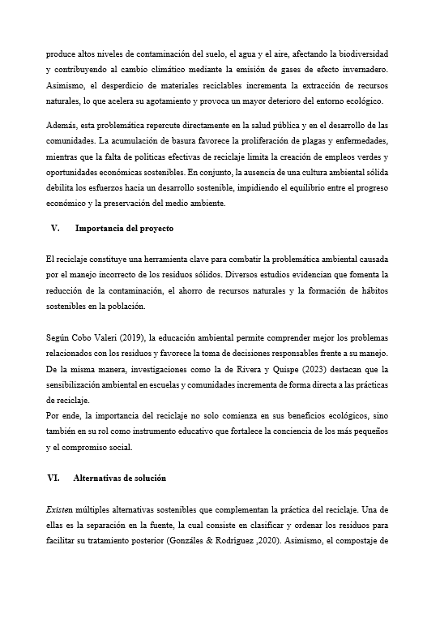
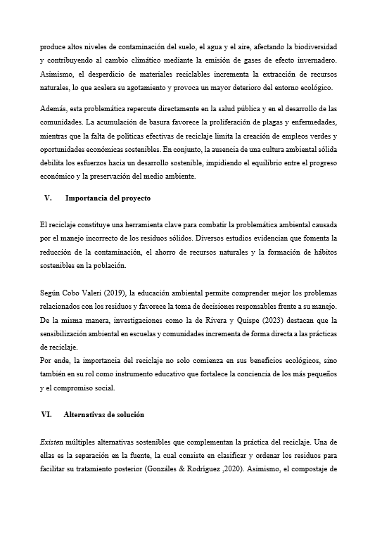

A continuación se presentan las imágenes correspondientes a la fundamentación del proyecto.
 


Municipalidad Provincial de Trujillo. (2023, agosto 25).
Trujillo distrito genera cada día 342,05 toneladas de residuos.
https://www.gob.pe/.../342-05-toneladas-de-residuos
Municipalidad Distrital de La Esperanza. (2020).
Ordenanza N.º 012-2020-MDE que aprueba el Plan de Manejo de Residuos Sólidos 2020–2024 del distrito de La Esperanza. Perú.
https://muniesperanza.gob.pe/.../2020111125_n.pdf
Gutiérrez Baque N. B. (2024).
El reciclaje como economía circular, una estrategia para el desarrollo sostenible del conjunto habitacional Jipijapa.
[Tesis de titulación, Universidad Estatal del Sur de Manabí].
https://repositorio.unesum.edu.ec/.../Gutiérrez%20Baque.pdf